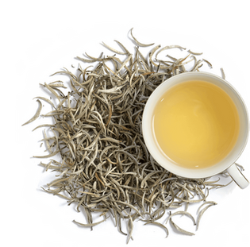
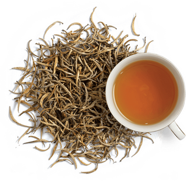
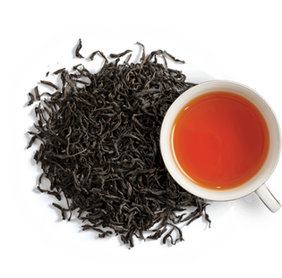
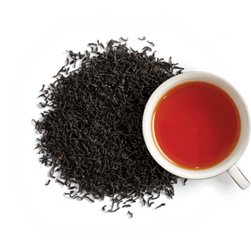
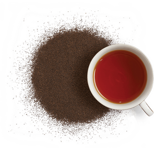

Shaded in the lush greenery of Pidurutalagala, 3km east of Nuwara Eliya, Pedro Tea Estate was established on the very spot where James Taylor planted his first tea bushes and launched the tea industry. It's one of the more accessible estates in the Hill Country, and the 20-minute tours take you through the entire manufacturing process, from sorting to the packing house, where you'll see many of the equipment from the colonial era that are still functioning.
Overlooking the factory building is the Lovers Leap Ethical Tea Boutique, where you can enjoy a cup of tea against a lush mountain backdrop. With great views. of the Bomburella reservoir.
The sprawling Damro Labookelie Tea Estate, perched on 5,000 acres of hillside 20km north of Nuwara Eliya, is far more picturesque than the Pedro Tea Estate and the surrounding countryside feels far more intact and unspoiled .
Originally part of the Mackwoods conglomerate founded in 1841, the factory now houses a fairly modern visitor center with a café where you can sample the estate's teas. Due to ease in access between Kandy, the factory can be busy in high season but the short free tour gives a good overview of the production process
| TEA GRADES | DISCRIPTION | IMAGE |
|---|---|---|
| Silver Tips | The finest buds of a special cultivar which turn velvety-silver when dried. Extremely rare, and usually handpicked before sunrise, they offer the gentlest fragrant brew. |  |
| Golden Tips | Contrary to popular belief, Orange Pekoe refers to a leaf size and not a flavour. Orange Pekoe tea has a strong scent and a smooth flavour with a sweet finish. |  |
| Orange Pekoe - OP | Contrary to popular belief, Orange Pekoe refers to a leaf size and not a flavour. Orange Pekoe tea has a strong scent and a smooth flavour with a sweet finish. |  |
| Flowery Broken Orange Pekoe - FBOP | Similar to Broken Orange Pekoe but bigger in size. It is a coarser, semi-leaf tea with a small portion of tips that produce a mild yet flavourful brew. |  |
| Dust 1 | The smallest of particles that infuse swiftly, resulting in optimum strength, colour and body. It is most suited for commercial brewing. |  |
| Information & Images From Ceylon Tea. Please Visit The Website To Purchase And Learn More About Ceylon Tea. |